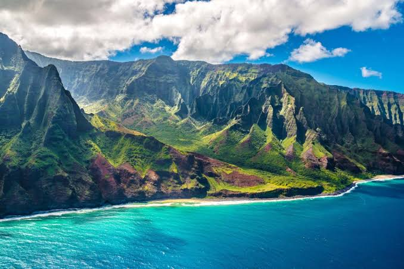

Hawaii ist eine Inselkette im Pazifischen Ozean. Sie ist benannt nach der größten Insel
des Archipels, die inoffiziell auch Big Island heißt. Die Inselkette wurde am 7. Juli 1898 durch die Vereinigten Staaten annektiert und 1959 als State of Hawaii
der 50. Bundesstaat der Vereinigten Staaten. Mittlerweile wird von Seiten des Bundesstaates meist die Schreibweise State of Hawaiʻi[2] (hawaiisch Mokuʻāina o Hawaiʻi) verwendet.
Quellen- und Lizenzhinweis:
Dieser Text basiert auf dem Wikipedia-Artikel
Hawaii
(geänderte Fassung) und steht unter der Lizenz
Creative Commons Attribution-ShareAlike 4.0 International (CC BY-SA 4.0).
Das Bild ist von
homeoftravel.de